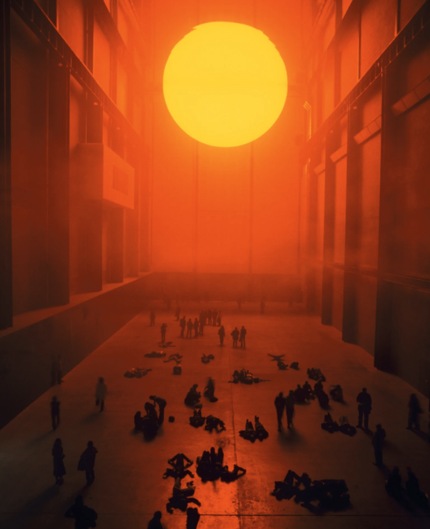

What a Place Makes Possible
A cave where time could pause. A home with room for family living far away. A community where sharing a meal could begin with a spontaneous call. These were some of the places participants imagined during AIC’s Design a Place You Wish Existed. What would become easier if we could live in them?
That question connects the imagined worlds to the artworks we explored together. In an image of people gathered beneath an artificial sun, participants recognized a beach scene, or something resembling a religious ritual. Some found it unsettling. The same setting suggested leisure, reverence, and unease. A constructed sun could evoke familiar ways of being together, even as its artificiality made people uncomfortable.

When we asked whether we would want these works in our homes, the conversation shifted. Several participants wanted something happier to live with; another mentioned people who enjoy unsettling imagery. Bringing art home gives it a different role: it becomes part of the atmosphere of an ordinary morning. Choosing it means considering how we want to feel over time.
The places participants created brought those wishes into sharper focus. The cave offered a pause that ordinary life rarely seems to allow. The family home made closeness possible across distance. The community recalled a way of life where company was readily available. Across these different worlds, rest, connection, and freedom kept returning.
What was striking was how the places answered those needs. Nobody had to become better at managing time before entering the cave. Being together in the family home would no longer depend on a long journey. These designs suggested that some things we pursue through personal effort might become easier when the conditions around us change.
That possibility reaches beyond imaginary worlds. We can ask what our actual surroundings make easy: whether a room invites us to linger, whether a gathering makes conversation comfortable, whether a place to rest keeps reminding us of work. Its appearance is one part of this; its routines and expectations matter too.
AI gave these possibilities a visible form. Sharing the images gave us a way to discuss what each place would allow. A beautiful garden might catch someone’s eye; the story behind it could reveal a longing for quiet that others recognized.
An imagined place cannot resolve every constraint. It can, however, help us notice demands we have grown used to living with. Alongside asking how we should change ourselves, we can ask what would support that change. A place worth creating may be one where the life we want takes a little less effort to live.